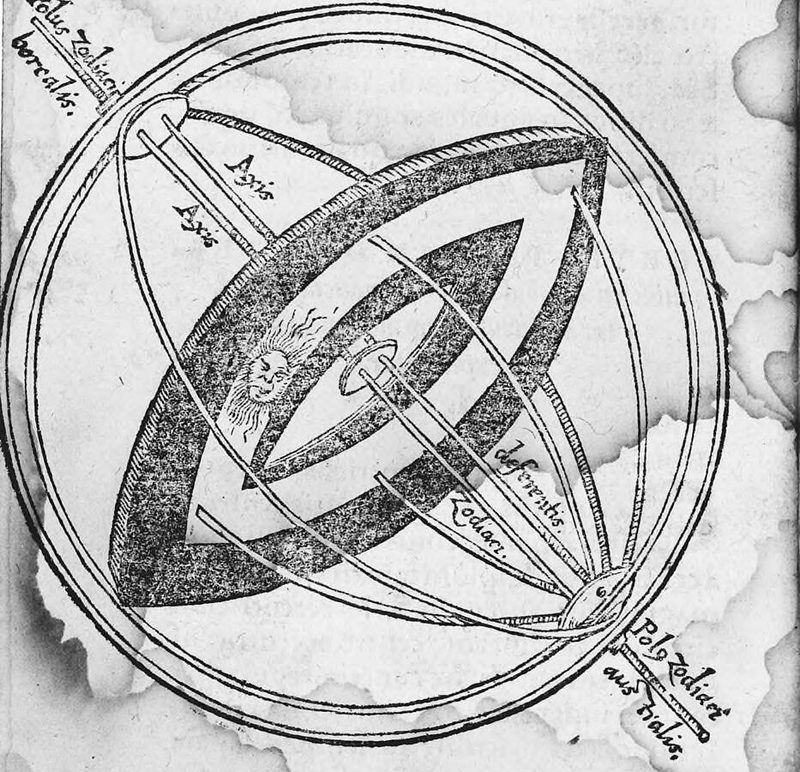

On page 1.3 we let the Sun move along the ecliptic at a constant rate. That Sun keeps time well on average, but its noon came out wrong by up to a quarter of an hour, and the length of its day by several minutes, because the real Sun runs up to 2° ahead of it in spring and as far behind it in autumn.
Hipparchus measured this unevenness and explained it with a single circle whose centre is not the Earth. With his circle we can predict the Sun's longitude to within two arcminutes, and from here on we judge every model by its error curve, the difference between the model and the real sky, plotted against time.
1 · ObservationFour unequal seasons
The equinoxes and the solstices divide the year at the moments when the Sun's longitude reaches 0°, 90°, 180° and 270°. A Sun moving uniformly would take a quarter of the year, 91.31 days, over each of these quarters. The real Sun of 2026 takes between 89 and almost 94 days. The table gives its seasons from the reference sky, with the times in UT and the names of the northern hemisphere, which the sources use.
| Season | Begins | Longitude $\lambda$ | Length |
|---|---|---|---|
| spring | 20 March, 14:31 | $0^\circ$ to $90^\circ$ | 92.74 days |
| summer | 21 June, 08:15 | $90^\circ$ to $180^\circ$ | 93.66 days |
| autumn | 23 September, 00:10 | $180^\circ$ to $270^\circ$ | 89.86 days |
| winter | 21 December, 20:47 | $270^\circ$ to $360^\circ$ | 88.98 days |
The half of the year from the March equinox to the September equinox is 7.6 days longer than the other half. Since the Sun covers 180° of longitude in each half, it must move more slowly in the northern summer than in the winter, and Figure 1 shows that it does.
In the figure
- dashed
- the mean daily motion, $n = 59.14'$ (page 1.3)
The daily motion swings by about 3.4% on either side of the mean. Over a quarter of a year these small differences add up to the two or more days by which the longest and the shortest seasons differ from a quarter of the year.
Hipparchus measured the same inequality in the second century BC. Ptolemy reports that he took 94½ days from the spring equinox to the summer solstice and 92½ days from there to the autumn equinox, "and then, with these observations as his sole data", found the size and the direction of the Sun's eccentric circle (Almagest III 4).
The reference sky shows that the seasons of his time were not those of today: it gives 94.01 days for the spring of 141 BC and 92.34 days for its summer, close to his values, so spring was then the longest season, where in 2026 summer is. Whatever sets the lengths of the seasons has moved since Hipparchus, and the eccentric fitted to one year cannot follow it.
2 · ModelThe eccentric circle
Uniform motion on a circle
Greek astronomers required every celestial motion to be uniform and circular. Ptolemy states the rule precisely: if we imagine each body carried around by a straight line, "the straight line in question describes equal angles at the centre of its revolution in equal times" (Almagest III 3).
Seen from the Earth, the Sun's motion is uneven, so the rule allows two explanations. Either the centre of the Sun's circle is not the Earth, or the Sun moves uniformly on a second, smaller circle whose centre is carried around the first. These are the eccentric and the epicycle.
Ptolemy shows that both can produce the Sun's inequality, and chooses the eccentric "since that is simpler and is performed by means of one motion instead of two" (III 4). Page 3.1 proves that the two are equivalent, and uses the epicycle for the Moon.
Both constructions take the Earth as at rest, as Hipparchus and Ptolemy did: they are geostatic. Observations made from the Earth cannot check that choice, because only relative motion is observed, as Copernicus puts it: "every observed change of place is caused by a motion of either the observed object or the observer or, of course, by an unequal displacement of each" (De Revolutionibus I 5).
The eccentric can therefore be turned into a heliostatic description. An equal circle, its centre offset the opposite way, carries the Earth about a resting Sun, and the line from the Earth to the Sun is at every moment the same, in length and direction, as in Hipparchus' eccentric. The Sun is seen exactly where the eccentric puts it, so the choice of the body at rest does not change a single prediction. Copernicus, who chose the Sun, explains the Sun's inequality in this way, with the Earth on an eccentric (III 15).

_;_Georg_Peurbach,_aut._de_texte_-_btv1b2600295g_(1_of_3).jpg){kind=link}
The equation of centre
Let the Sun move uniformly, at the rate $n$ of page 1.3, on a circle of radius 1 whose centre C lies at a distance $e$ from the Earth O. The point of the circle farthest from the Earth, in the direction from O through C, is the apogee, at longitude $\lambda_A$, and the nearest, opposite it, is the perigee.
Seen from C, the Sun's longitude is the mean longitude $\bar\lambda = L_0 + n\,d$ of page 1.3, and we count its angle from the apogee, the mean anomaly $M = \bar\lambda - \lambda_A$. Seen from O, it is the true longitude $\lambda$, and the difference $q = \lambda - \bar\lambda$ is called the equation of centre.
To find $q$ we write the Sun's position as a vector from the Earth, $\vec{OS} = \vec{OC} + \vec{CS}$, in a frame turned to the direction of $\vec{CS}$: its first axis points to $\bar\lambda$ and its second 90° further east. There $\vec{CS} = (1, 0)$, and $\vec{OC}$, of length $e$ towards $\lambda_A = \bar\lambda - M$, is $e\,(\cos M, -\sin M)$, so
The direction of this vector, measured from the first axis, is the angle from $\bar\lambda$ to $\lambda$, which is $q$:
From the apogee to the perigee, $0^\circ < M < 180^\circ$, $q$ is negative and the Sun lags behind its mean longitude, while on the other half of the circle it runs ahead. Ptolemy uses the same sign, subtracting the equation in the first half (Almagest III 8). Fitzpatrick counts $M$ from the perigee, so his $q$ has the opposite sign for the same $M$.
The Sun's eccentricity turns out to be about $1/30$, small enough to expand the formula. To first order in $e$,
$$q \approx -e \sin M \quad \text{(in radians)},$$so the Sun is never more than about $e$ radians, nearly 2°, from its mean place. The terms we dropped are of order $e^2/2$, under 2′ for the Sun, and Exercise 2 shows that the largest value of $|q|$ is exactly $\arcsin e$.
Kepler's ellipse, which the modern theory keeps as the first approximation to the Sun's path relative to the Earth, gives to first order $q \approx -2e_\text{K} \sin M$, where $e_\text{K}$ is its eccentricity. The eccentric gives the same directions if its centre is offset by $e = 2e_\text{K}$, as the fit in section 3 confirms. Page 4.2 compares the two to second order.
Why the seasons are unequal
The lines from the Earth towards the equinoxes and the solstices cut the eccentric into four arcs. Because the Earth is not at the centre of the eccentric, the arcs are unequal, and the Sun, covering each of them at the same uniform rate, takes longest over the longest.
The longest arc is the one that contains the apogee, where the circle is farthest from the Earth. In 2026 the apogee is at about 104°, in summer, which is why summer is the longest season and winter, which contains the perigee, the shortest.
The Sun's eccentricity is so small that, drawn to scale, the circle looks centred on the Earth. Figure 2 therefore starts with $e = 0.2$, six times the Sun's, which shows the same geometry with larger angles and less equal seasons.
(a) the eccentric
(b) the equation of centre through 2026
In panel (a)
- dashed
- the mean direction $\bar\lambda$, from C to the Sun and parallel to it from the Earth
In panel (b)
- dashed
- the first-order approximation, $-e \sin M$
3 · FitEccentricity and apogee from two seasons
The offset centre of the eccentric is what makes the seasons unequal, so their lengths reveal it. Hipparchus found the centre, its distance $e$ from the Earth and the direction of the apogee $\lambda_A$, from the lengths of spring and summer alone. The mean motion $n$ comes from the length of the year (page 1.3), and the place of the Sun at one moment gives $L_0$.
Hipparchus' method
Put the Earth at the origin, with the $x$ axis towards γ and the $y$ axis towards the summer solstice, so that the two axes are the four lines from the Earth towards the equinoxes and the solstices. We write the centre of the eccentric as $C = (h, k) = e\,(\cos\lambda_A, \sin\lambda_A)$, in units of its radius, and keep $x$ and $y$ for the axes.
On the eccentric the Sun moves uniformly as seen from C, so the time it takes over a season is proportional to the angle, at C, between the two points where the circle meets the axes at the start and at the end of that season. Figure 3 (a) draws these angles with C six times farther from the Earth than the fit puts it, so that they can be seen, and Figure 3 (b) shows C at the fitted distance.
The $x$ axis runs at the distance $k$ below C. The radius from C to the point where it meets the circle towards γ has length 1 and drops by $k$, so it makes the angle $\arcsin k$ with the parallel to the $x$ axis through C, and C sees that point at $-\arcsin k$. On the other side, towards 180°, the same axis meets the circle at $180^\circ + \arcsin k$ as seen from C.
In the same way the $y$ axis runs at the distance $h$ to the left of C, which puts its point towards the summer solstice at $90^\circ + \arcsin h$ and its point towards the winter solstice at $270^\circ - \arcsin h$. The formulas hold for either sign. When the apogee is beyond 90°, as it is today, $h$ is negative: C lies to the left of the $y$ axis, the radius to the summer solstice leans towards γ, and the angle $90^\circ + \arcsin h$ is less than 90°, as in Figure 2 and in the preset "2026" of Figure 3.
Seen from C the Sun moves $360^\circ/Y$ a day, so the lengths $T_1$ and $T_2$ of spring and summer give the arcs between these points, the thick arcs of Figure 3 (a):
$$a_1 = \frac{360^\circ\, T_1}{Y} = 90^\circ + \arcsin h + \arcsin k, \qquad a_2 = \frac{360^\circ\, T_2}{Y} = 90^\circ - \arcsin h + \arcsin k.$$Adding and subtracting the two equations separates the unknowns, and the centre then gives the eccentricity and the direction of the apogee:
The other two seasons follow from the same centre, with the arcs $a_3 = 90^\circ - \arcsin h - \arcsin k$ for autumn and $a_4 = 90^\circ + \arcsin h - \arcsin k$ for winter. Two seasons therefore predict the other two, which makes the model testable even before we compare it with the sky.
With Hipparchus' two seasons, the method puts the centre at $e = 0.0414$ towards $\lambda_A = 65.4^\circ$. Ptolemy, who works with chords, finds the radius "approximately 24 times" the distance between the centres, and adopts $e = 1/24$ with the apogee at $\lambda_A = 65^\circ 30'$ (III 4). Exercise 1 follows his computation.
(a) the construction, C six times farther out
(b) the centre at the fitted distance, magnified
In the figure
- dashed
- the parallels to the axes through C
Read-out
- $|q|_\text{max}$
- the greatest equation of centre, $\arcsin e$ (Exercise 2)
The Sun of 2026
Applied to the seasons of 2026 in the table of section 1, with the modern year of 365.24219 days, the method gives $e = 0.03347$ and $\lambda_A = 103.73^\circ$. It then predicts autumn and winter to within about half an hour of the real ones.
Compared with Kepler's ellipse for 2026, from the elements used by the reference sky, the fitted $e$ equals twice its eccentricity $e_\text{K}$ to within 0.1%, while the fitted apogee is 0.35° too far east.
Of the two parameters, the apogee depends far more on the timing of the seasons. Moving one hour from summer to spring shifts it by 0.9° and hardly changes $e$, as Toomer also notes for Hipparchus' data (note to III 4), and the ancient observations were timed to a quarter of a day at best.
The mean longitude at the epoch
The last parameter comes from the moment of the spring equinox, which we timed on page 1.2 to find γ. At that moment the Sun is at γ, at the angle $-\arcsin k$ as seen from C, which is therefore its mean longitude. In 2026 the equinox came on 20 March at 14:32 TT, 9575.106 days after J2000.0, with $-\arcsin k = 358.137^\circ$. Going back to the epoch at the rate $n$,
$$L_0 = 358.137^\circ - n \times 9575.106\ \text{d} = 280.459^\circ \pmod{360^\circ},$$0.45′ less than the value 280.46646° of Meeus that page 1.3 used without deriving it.
Ptolemy fixed his epoch in the same way, from the autumn equinox he observed in AD 132. His eccentric gave the Sun's mean position at that moment, and he carried it back 879 years to the start of the era Nabonassar, where the mean Sun was $0^\circ 45'$ into Pisces, at $330.75^\circ$ (III 7).
4 · TestThe eccentric against the real Sun
To see how much the eccentric gains over the uniform Sun of page 1.3, we plot the error of each through 2026, model minus sky, $\Delta\lambda = \lambda_\text{model} - \lambda_\text{ref}$, in arcminutes, as on page 1.1. The two errors differ so much that one scale cannot show both, so Figure 4 (a) shows them together and (b) the eccentric alone, on a scale a hundred times finer.
(a) the eccentric and the uniform circle
(b) the eccentric alone, on a finer scale
The uniform circle is wrong by up to 115′ and the eccentric by at most 1.7′, about seventy times less.
The eccentric also removes the error that page 1.3 left in the length of the day, which depends on the Sun's declination and so on its longitude. With the eccentric's longitude in the declination formula, the largest error of the day in 2026, which page 1.3 found to be 5 to 13 minutes at Rome, London and latitude 65°, falls below half a minute at all three.
Ptolemy's Sun
To judge the eccentric in its own time, we run Ptolemy's version of it. It has the same shape, with the eccentricity and the apogee he took from Hipparchus' seasons, the mean Sun of his epoch, at noon at Alexandria on 26 February 747 BC, and the mean motion of his year. He counted solar days, which follow the Earth's slowing rotation, so we turn the reference sky's uniform time into his with $\Delta T$ (page 1.3), almost six hours at his epoch.
In AD 140 his Sun is behind the real one by about 1.1° on average, and most of this error is in his epoch.
At the autumn equinox he observed on 25 September 132, two hours after noon, his model puts the Sun at the equinox within a fraction of an arcminute, as it must, since he fixed his epoch from that observation. The real Sun had reached the equinox 34 hours earlier.
Ptolemy's other equinox and his solstice are also about a day late (Exercise 3), and whether he really observed them is one of the long disputes about the Almagest. Toomer calls the delay "the strongest argument of those modern critics who have maintained that Ptolemy 'faked' observations" (note to III 1).
The part of the error that changes through the year comes from his parameters: his eccentricity is a fifth too large, and his apogee lies 5° behind the apogee fitted to the real seasons of his time (Exercise 3).
Over the centuries the error grows because his year is 6.4 minutes too long. His mean Sun falls further behind every century, and by 2026 his Sun is 9.2° behind the real one.
5 · ResidualWhat the eccentric leaves out
Over 2026 the eccentric fitted to that year stays within 1.7′ of the real Sun. About half of this error comes from the shape of the circle, which differs from Kepler's ellipse in the terms of second order in $e$ (page 4.2), and most of the rest from the small error of the fitted apogee.
The small monthly ripples of Figure 4 (b) come from the Moon. The Earth and the Moon both turn about their common centre of mass, so the Earth swings a little to and fro every month, and the Sun, seen from the Earth, moves the opposite way by up to 7″.
Over longer spans the error grows, to about 3′ within fifty years of 2026 and almost 20′ five centuries away.
Fitting the real seasons of other years by Hipparchus' method shows why the error grows: the apogee is not fixed, and it moves east.
| Year | Spring | Summer | Apogee $\lambda_A$ |
|---|---|---|---|
| 141 BC (Hipparchus) | 94.01 d | 92.34 d | $65.9^\circ$ |
| AD 140 (Ptolemy) | 93.90 d | 92.56 d | $70.7^\circ$ |
| 880 (al-Battani) | 93.51 d | 93.07 d | $83.6^\circ$ |
| 1250 | 93.29 d | 93.29 d | $90.1^\circ$ |
| 1515 (Copernicus) | 93.11 d | 93.43 d | $94.7^\circ$ |
| 2026 | 92.74 d | 93.66 d | $103.7^\circ$ |
The apogee moves by about 1.75° a century relative to γ. Around 1250 it passed the summer solstice, and spring and summer were then equally long. Ptolemy thought it fixed, because he found Hipparchus' seasons again in his own time, and concluded that the eccentric "always maintains the same position relative to the solsticial and equinoctial points" (III 4). Exercise 3 shows what went wrong.
Later astronomers saw it move. Al-Battani, around 880, put the apogee 7°43′ before the summer solstice, and Copernicus, in 1515, found it 6⅔° after it. Copernicus wrote of the eccentricity and the apogee that "both values are now found to have changed with a perceptible difference" (De Revolutionibus III 16 [f. 87v]).
Most of this motion belongs to γ rather than to the apogee. The origin of longitudes itself slides westward along the ecliptic, so that every longitude counted from it grows by about 1.4° a century, as page 2.3 explains. Only the remaining 0.3° a century is a turning of Kepler's ellipse itself: its line of apsides, through the apogee and the perigee, turns under the pull of the planets.
The eccentric also predicts how far away the Sun is. The Sun is farthest at the apogee, $1 + e$ times the radius of the circle from the Earth, and nearest at the perigee, $1 - e$ times, so with $e = 0.0335$ its distance swings by 3.35% either way from the mean.
We can check this against the size of the Sun's disc. Its apparent diameter, the angle the disc spans in the sky, is inversely proportional to the distance, and at the mean distance it is 31.99′. Dividing by $1 + e$ and $1 - e$ gives the disc the eccentric predicts at the apogee and the perigee, which the table compares with the real disc of 2026:
| Apparent diameter | Apogee, early July | Perigee, early January |
|---|---|---|
| eccentric | 30.95′ | 33.10′ |
| real Sun | 31.46′ | 32.53′ |
The real disc changes by only half as much, because the real distance follows Kepler's ellipse and swings by $e_\text{K} = e/2$ either way. The eccentric gets the directions right but doubles the variation of the distance, a fault that returns, much larger, with the Moon on page 3.2.
The Sun's uneven motion also shows every day, on a sundial. A sundial reads the Sun's hour angle, which depends on its right ascension, and the right ascension depends both on the uneven longitude of this page and on the tilt of the ecliptic. Page 2.2 combines the two into the equation of time.
Exercises
Hipparchus' spring lasts 94½ days and his summer 92½ days, with Ptolemy's year of 365;14,48 days (365.24667 days). Find the centre $C = (h, k)$ of his eccentric, then $e$, $\lambda_A$, the lengths of autumn and winter and the greatest equation of centre, and compare them with Ptolemy's values. Check with the preset "Hipparchus" of Figure 3, then with "141 BC", the real seasons of his time.
Convert the two seasons into arcs of the eccentric, $a_i = 360^\circ\, T_i / Y$, and use the boxed formulas of section 3.
The arcs are $a_1 = 93.1425^\circ$ ($93^\circ 08' 33''$) and $a_2 = 91.1713^\circ$ ($91^\circ 10' 17''$), Ptolemy's $93^\circ 9'$ and $91^\circ 11'$ ($93.15^\circ$ and $91.18^\circ$). So $\arcsin k = (a_1 + a_2 - 180^\circ)/2 = 2.1569^\circ$ and $\arcsin h = (a_1 - a_2)/2 = 0.9856^\circ$, which give $k = 0.03764$ and $h = 0.01720$: in Hipparchus' time the apogee was before the summer solstice, so $h$ was positive.
Then $e = \sqrt{h^2 + k^2} = 0.04138$, or 2;28,58 parts (2.483) on a radius of 60, which Ptolemy rounds to 2;30 parts (2.5), that is, $1/24$. The apogee is at $\lambda_A = \operatorname{atan2}(k, h) = 65.44^\circ$, 24.56° before the summer solstice, where Ptolemy has $24^\circ 30'$ and so $65^\circ 30'$ ($65.5^\circ$).
Autumn takes $a_3 = 90^\circ - \arcsin h - \arcsin k = 86.857^\circ$, or 88.12 days, and winter $a_4 = 90^\circ + \arcsin h - \arcsin k = 88.829^\circ$, or 90.12 days: Ptolemy's 88⅛ and 90⅛ days. The greatest equation is $\arcsin e = 2^\circ 22' 18''$, and with Ptolemy's rounded $1/24$ it is $2^\circ 23' 17''$, his $2^\circ 23'$ ($2.383^\circ$).
The real seasons of 141 BC, 94.01 and 92.34 days, give $e = 0.0352$ and $\lambda_A = 65.86^\circ$. Hipparchus' apogee is within half a degree, but his eccentricity is 18% too large, because his spring and summer together are 0.64 days too long.
Starting from $q = -\operatorname{atan2}(e\sin M, 1 + e\cos M)$, show that $q \approx -e\sin M + \tfrac12 e^2 \sin 2M$ to second order in $e$ (in radians). Then show that $|q|$ is greatest when $\cos M = -e$, and that its greatest value is exactly $\arcsin e$. Where is the Sun then, as seen from the Earth? Find Ptolemy's greatest equation for $e = 1/24$, and that of the 2026 fit, $e = 0.03347$.
For small $e$, $\tan q$ is small and $q \approx \tan q$ to second order. For the maximum, differentiate $\tan|q| = e\sin M / (1 + e \cos M)$ with respect to $M$.
For $0 < M < 180^\circ$, $\tan|q| = e\sin M / (1 + e\cos M)$. Expanding the denominator, $e\sin M\,(1 - e\cos M + \dots) = e\sin M - \tfrac12 e^2 \sin 2M + O(e^3)$, and since $\arctan u = u - u^3/3 + \dots$ differs from $u$ only at third order,
$$q \approx -e \sin M + \tfrac12 e^2 \sin 2M.$$The derivative of $e\sin M / (1 + e\cos M)$ is
$$\frac{e\cos M\,(1 + e\cos M) + e^2 \sin^2 M}{(1 + e\cos M)^2} = \frac{e\,(\cos M + e)}{(1 + e\cos M)^2},$$which vanishes at $\cos M = -e$. There $\sin M = \sqrt{1 - e^2}$ and $1 + e\cos M = 1 - e^2$, so $\tan|q| = e / \sqrt{1 - e^2}$, which means $\sin|q| = e$. Since $M = 90^\circ + \arcsin e$ and $q = -\arcsin e$, the true longitude is $\lambda = \lambda_A + 90^\circ$: seen from the Earth, the Sun is a right angle from the apogee. This is Ptolemy's construction in III 4, a right angle at the Earth.
For $e = 1/24$ the greatest equation is $2^\circ 23' 17''$, at $M = 92^\circ 23' 17''$: Ptolemy's $2^\circ 23'$ at $92^\circ 23'$ ($2.383^\circ$ at $92.383^\circ$). For $e = 0.03347$ it is $1^\circ 55' 05''$, at $M = 91.92^\circ$. The first-order formula $-e\sin M$ differs from the exact one by at most 1.96′ for the 2026 fit.
Ptolemy reports that he found Hipparchus' 94½ and 92½ days again in AD 139–140, from an autumn equinox on 26 September 139 about an hour after sunrise, a spring equinox on 22 March 140 about an hour after noon, and a summer solstice on 25 June 140 about two hours after midnight, and he concludes that the apogee never moves (III 1, III 4). The reference sky puts these moments, in Alexandria mean time, at 24 September 139, 21:17, 21 March 140, 16:16, and 23 June 140, 13:49. What went wrong, and what were the real seasons and apogee in his time?
Compare the delays of the three observations, then use Figure 3 with the real lengths of spring and summer.
All three observations are late: the autumn equinox by about 34 hours, the spring equinox by 21 hours and the solstice by 36 hours. The real spring of AD 140 lasted 93.90 days and its summer 92.56 days, not 94½ and 92½.
Fitted by Hipparchus' method, these real seasons put the apogee at 70.7°, 5° further east than in 141 BC, with $e = 0.0349$. Ptolemy's delays happen to reproduce the intervals of Hipparchus' time, so his data showed no motion; since one hour moved between two seasons shifts the apogee by about 0.9°, errors of a day hide a shift of a few degrees completely.
The apogee kept moving at about 1.75° a century relative to γ: in 2026 it is at 103.7°. Page 2.3 explains that most of this is the motion of γ itself.
Sources
- Ptolemy, Almagest (transl. G. J. Toomer, 1984): III 1 (the equinoxes and solstices of Hipparchus and Ptolemy, with Toomer's notes on the late observations); III 2 (the mean motion); III 3 (uniform circular motion, the eccentric and the epicycle); III 4 (the eccentricity and the apogee from 94½ and 92½ days, the greatest equation 2° 23′ at 92° 23′, the fixed apogee, with Toomer's note on the effect of an hour); III 5–6 (the table of anomaly); III 7 (the epoch: Nabonassar, Pisces 0° 45′, Gemini 5° 30′); III 8 (computing a position, the sign of the equation).
- Copernicus, De Revolutionibus (transl. E. Rosen), I 5 [f. 3r] (only relative motion is observed); III 15 [f. 85r] (the Earth's eccentric about the Sun); III 16 [ff. 87r–88v] (Hipparchus' seasons; al-Battani and al-Zarqali; the eccentricity 1/31 and the apogee in 1515).
- R. Fitzpatrick, A Modern Almagest, § 4.3 (Hipparchus' model of an orbit: the same angles to first order, twice the variation in distance), §§ 5.1 and 5.3 (the equation of centre, with $M$ from the perigee; the lengths of the seasons).
- J. Meeus, Astronomical Algorithms (2nd ed., 1998), ch. 25 (the Sun's mean longitude) and ch. 55 (its semidiameter, 959.63″ at 1 au).
- E. M. Standish, Keplerian Elements for Approximate Positions of the Major Planets (JPL): the Earth's eccentricity and perihelion, used by the reference sky.
- Every number on this page:
tools/numbers/2.1-uneven-year.js.